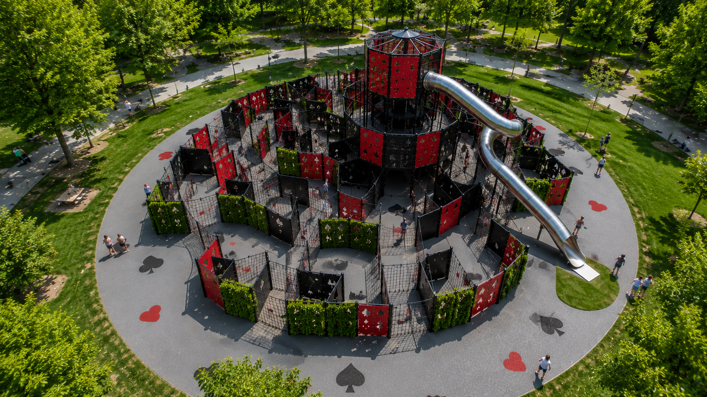
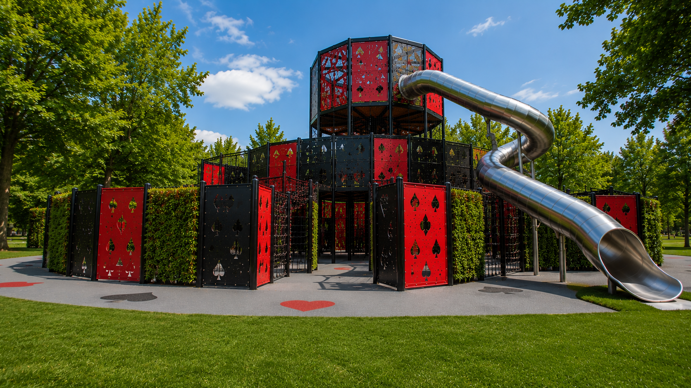
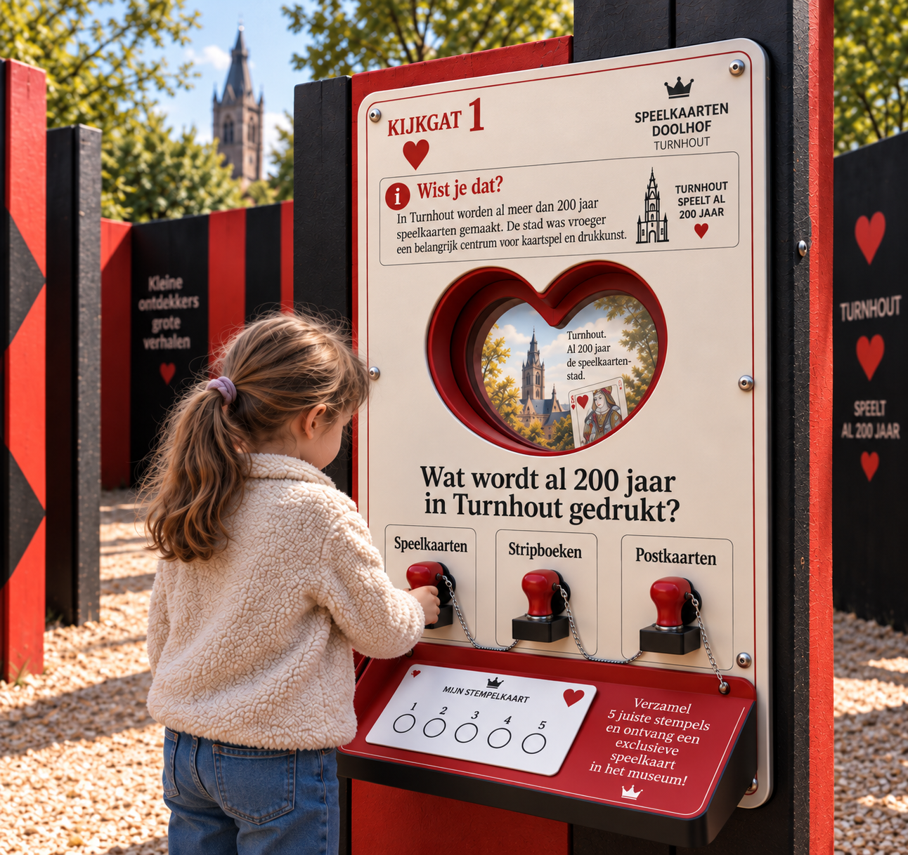
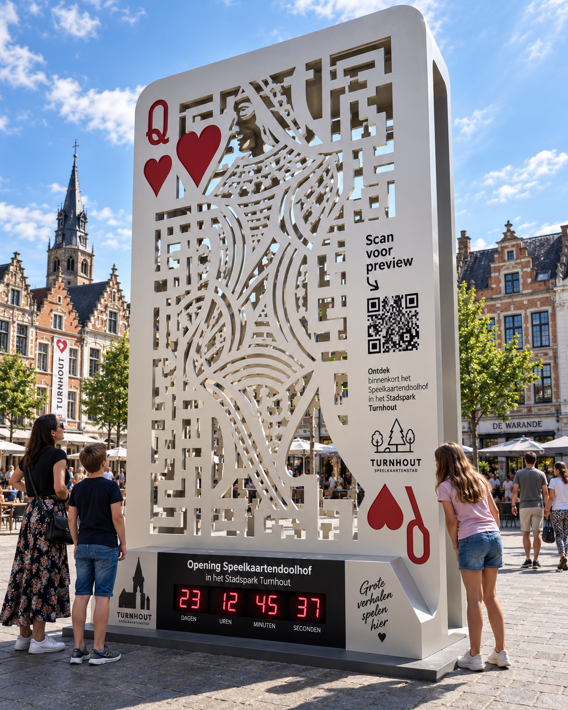
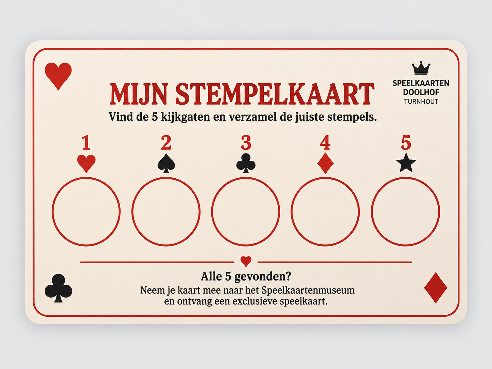
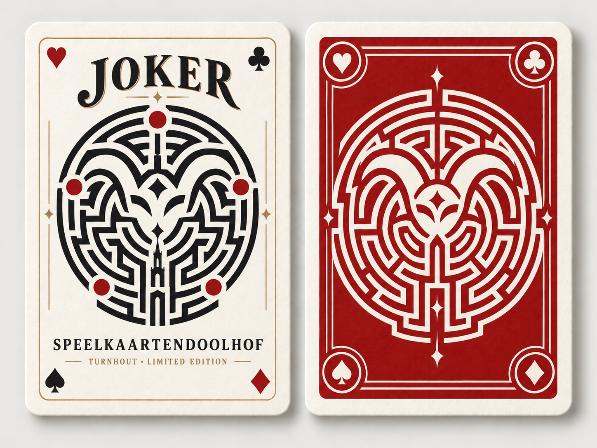

Neem je stempelkaart
Aan de ingang neem je gratis een stempelkaart.

START TO CARD · TURNHOUT
Verdwaal. Speel. Ontdek.
Een interactieve ontdekkingstocht door 200 jaar Turnhoutse speelkaartgeschiedenis.
Ontdek het doolhof ↓ONTDEK
Een interactief doolhof waarin spelen, bewegen en 200 jaar Turnhoutse speelkaartgeschiedenis samenkomen.
In het Stadspark ontdek je draaibare wanden, klimstructuren, verborgen routes en interactieve informatiepunten.
VOOR JONG & OUD
Kinderen kunnen zoeken, spelen en stempelen, terwijl ouders, toeristen en andere bezoekers tegelijk meer ontdekken over Turnhout en zijn speelkaartenerfgoed.
PREVIEW
Van het monumentale parcours tot de kleinere interactieve details.



SPEEL
Het doolhof kan vrij ontdekt worden. Onderweg vormen vijf informatiepunten samen één eenvoudige spelervaring.
Aan de ingang neem je gratis een stempelkaart.
Vind de vijf interactieve informatiepunten verspreid door het doolhof.
Bekijk de informatie en beantwoord een korte vraag.
Gebruik de stempel die bij jouw antwoord hoort.
Met vijf juiste antwoorden verdien je de exclusieve Joker.
KIJK · LEES · KIES
Elk kijkgat combineert spel met informatie over Turnhout en zijn speelkaartenerfgoed.
De informatie is opgebouwd in twee niveaus. Zo kan iedere bezoeker zelf bepalen hoeveel hij of zij wil ontdekken.
Een korte vraag met duidelijke antwoordmogelijkheden. Kies je antwoord en plaats de bijhorende stempel op je kaart.
Wie meer wil weten, ontdekt extra achtergrondinformatie over Turnhout, speelkaarten en het lokale erfgoed.
VERZAMEL
Elk kijkgat heeft een vast nummer dat overeenkomt met één vak op je stempelkaart.
Er is geen vaste route. Je bepaalt zelf welke informatiepunten je eerst ontdekt en probeert uiteindelijk alle vijf juiste stempels te verzamelen.

JOKER · JOUW BELONING
Neem je volledige stempelkaart mee naar het Speelkaartenmuseum en ontvang jouw exclusieve limited-edition Joker.
LIMITED EDITION · SPEELKAARTENDOOLHOF TURNHOUT
BEZOEK
Klaar om zelf te verdwalen?